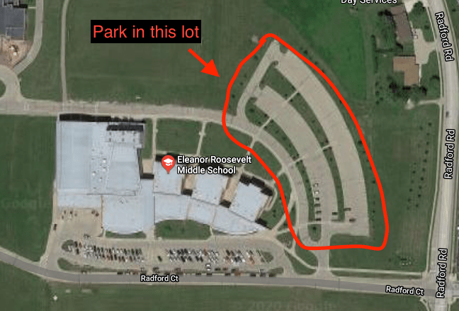

February Dubuque Rehearsal & Audition Weekend

January 29, 2020
The February Dubuque rehearsal and audition camp for the 2020 Colts will be held February 14-16, at Eleanor Roosevelt Middle School in Dubuque, Iowa. The address of the facility is 2001 Radford Rd, Dubuque, IA 52002. Click here for a Google map to the facility. New brass students are welcome to attend!
The cost for your first rehearsal is $200 (or $150 for returning members), which includes all audition and application fees. Pay the fees online for your first camp in advance and SAVE $25. Deadline for advance payment discount for the camps is the Monday immediately before a camp at 11:00 PM. If this is your second camp, the cost is $75. This fee covers the cost of your audition and the event and does not apply toward your summer tuition.
Always check colts.org within a few hours of leaving for Dubuque for any last-minute updates!
Registration and unloading will begin at 6:00 PM on Friday. Rehearsal begins at 8:00 PM, and will conclude at 3:00 PM on Sunday. Plan on arriving at 6:00 PM to register and unload equipment.
TRAVEL PLANS
We provide ground transportation anytime to and from the Dubuque Regional Airport (DBQ) for Dubuque camps. We can also accommodate flights into surrounding airports (Quad Cities, Madison, Rockford, or Cedar Rapids) but you MUST notify us prior to booking. MLI (Moline) and CID (Cedar Rapids) are very close to Dubuque and reasonable in fare. Please note that the Dubuque, Cedar Rapids, and Moline airports close over night. Do not plan on spending the night before or after the camp at these airports. ORD (O'Hare) travel MUST land prior to 3:30 PM on Friday and depart no earlier than 7:30 PM on Sunday. Midway (MDW) travel MUST land prior to 2:30 PM on Friday and depart no earlier than 8:30 PM on Sunday. If you plan on using either of these airports, please let colts@colts.org know prior to booking flights.
If you need help finding a ride to camp, or to arrange rides from an airport or bus station, please notify us ASAP by email at colts@colts.org. You can also help fellow members by offering a ride in your vehicle. You can let us know if you have extra room or if need a ride on your RSVP. All flight details should also be listed on your RSVP.
PARKING
Please park in the EAST lot for this event.

CAMP PAPERWORK
Prior to camp, you will be expected to turn in:
- RSVP. Regardless of your plans, submit an RSVP so we can keep you up to date. Be sure to include all necessary flight and travel information in the RSVP. If you need a ride from the airport, you will be notified by the Thursday immediately before the camp who will be picking you up. The RSVP should be submitted each month by interested students.
- Member Application. Submit your application in advance to save time at check-in. All auditioning students must submit a member application. The application only needs to be submitted once per year, unless your information changes
- Email a head shot of yourself to aidan@colts.org. Include your name (first and last), section, and which audition camp you are attending. This picture is added to your audition file so our instructional team can quickly learn your name and face. This picture must be submitted before the camp starts and is required of all attending. Make sure the image is clear, well lit, and contains your whole face. And, as great as your sunglasses or Snapchat filters may look, they don't belong in your head shot.
- Colts Medical History Form. This form is required in order to audition. The medical form also provides permission to participate in our activities. Students 18 or older may sign their own medical form. Any student 17 or younger must have a parent or guardian signature to participate. Medical forms only need to be submitted once per year, unless your information changes. Be sure to complete both sides!
WHAT TO BRING
Students stay overnight at the school on the floor, as you will all summer. Bring changes of clothes, shower supplies, towel, sleeping bag and pillow, comfortable clothes for rehearsal (no jeans), and tennis shoes (no high tops). Many students will bring an inflatable mattress with a battery-powered air pump. Bring a binder with plastic sleeves for your music and any hand-outs. You will receive an audition t-shirt at check-in to write your name on that you will wear for all rehearsal segments of the weekend. Don't forget to bring a water bottle!
Brass: Bring your own mouthpiece, marching instrument, music stand, binder for music, and gloves. If you have absolutely no access to an instrument and need one provided, contact colts@colts.org. Be prepared to play the exercises and excerpts provided in the brass packet that best fits your area of interest. You may also demonstrate your abilities with any piece, etude, or excerpt you feel comfortable with. We will evaluate you individually, and as a part of the group.
MEMBERSHIP CONTRACTS
Limited positions are open in the brass line. Following the weekend, you will receive 1) an offer of membership, 2) a recall for a second audition, or 3) a suggestion to come back again next year or to consider Colt Cadets. Most will receive a recall to a second rehearsal, so please plan accordingly. Recall auditions can be scheduled three weeks after your initial audition at one of our events. Attend early and attend often for your best chance at a position in the Colts.
If this is your second rehearsal, we are specifically looking for the growth you have made in the past month. Your audition will be very similar to the prior month, so be prepared in the same manner as which was asked for your first audition. A decision will be made regarding your membership after this camp. If you cannot attend this camp, make sure you are communicating with the office and your caption head about when you will be here.
Individuals offered a contract should begin making payments on your fees immediately when you submit your contract. If you cannot attend this rehearsal, you must be in touch in advance to preserve your position in the corps. Initial contract offerings are valid until noon on Saturday of this rehearsal. We must have a signed contract with initial payment by that time, or the spot will be released to someone else. You can pay your fees by cash or check, or by card online at the Colts Mall.
SCHEDULE CONFLICTS
Camp attendance is critical to our and your success. If you cannot attend this rehearsal but are planning to attend an upcoming audition, you must be in touch in advance through the RSVP. It is important to communicate with your caption head as well. Too much communication is better than not enough.
If you have schedule conflicts with our preseason rehearsals, talk with us. Attending part of the weekend is better than not attending at all. Do not lose your opportunity to perform with the Colts over a lack of communication.
PARENTS
There is no parent meeting scheduled for this event, but Vicki, Aidan and Rich will be available Friady night and throughout the weekend to answer any questions you may have about Colts or Colt Cadets. Schedules will be available at the check-in table with locations for everything going on throughout the weekend. If you arrive at a random time throughout the weekend, the kitchen or check-in table are great places to start with questions anytime you visit about where you can help.
Parents are strongly encouraged to attend the weekend. Parental support is what makes the Colts successful, and you are needed to give the kids the incredible Colts experience we are known for. Also, this is the best way for you to find out about our program, meet other parents, and get comfortable with what this is all about. You will find a very welcoming and exciting opportunity here.
Parents will cook and serve the meals throughout the weekend, coordinate sewing projects, and assist with some repair work and construction projects at the corps warehouse. We always have things to do for anyone willing to lend a hand!
Parents are welcome to stay overnight in designated rooms at Roosevelt Middle School with sleeping bags and air mattresses. If parents are interested in hotel accommodations, we recommend the Hampton Inn, as we can offer a special rate of $91.00 per night. To receive the rate, call 563.690.2005, ask for the front desk and ask for the Colts Drum Corps rate. Auditioning students are expected to stay with the group overnight at the school. As always, email or call us with any questions you may have.
Parents are encouraged to sign onto the email distribution list to receive Colts information via email.
SOUVENIRS
The souvenir racks will not be at this camp, but you can pre-order all of our merchandise online, and we'll bring it to you at camp! You can view our inventory and make your purchase at the Colts Mall. Use offer code "CampPickup" to let us know you'll pick up your merchandise, and you'll receive free shipping!
CLINIC AND SUNDAY AFTERNOON PERFORMANCE
Unique to this camp is an opportunity to work with Roosevelt Middle Schoool's band! Mike Miller will be the guest clinician, and we will have an opportunity for exchange performances. More details will be released the week of camp. Our own wrap-up performance will be held Sunday afternoon at Roosevelt Middle School. Specific time and details about Sunday's performance will be posted the week of camp and will be available on the schedules at the check-in table.
EMAIL AND WEBSITE
Please make sure you have received audition information in your area of interest! These materials are emailed to you after requesting information for the current season.
Join our Facebook groups for your area of interest! These pages will help you meet other members prior to auditions and clarify questions you may have.
Welcome! We are excited to have you as a part of the Colts family!
Return to Colts News.